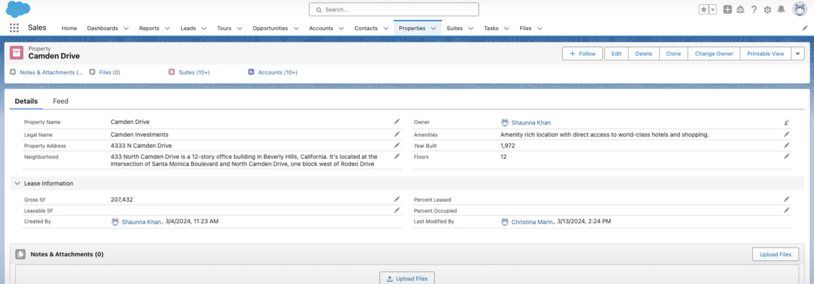
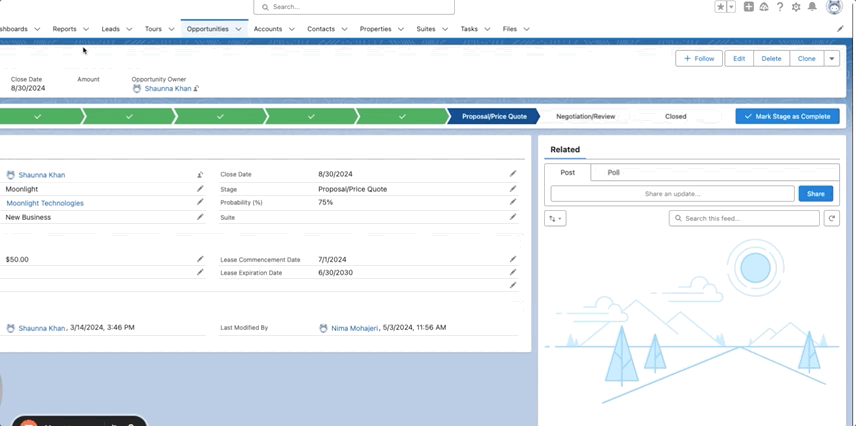
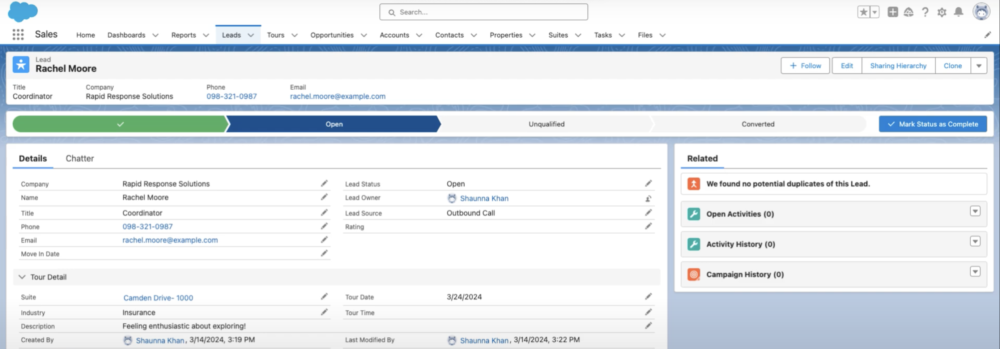
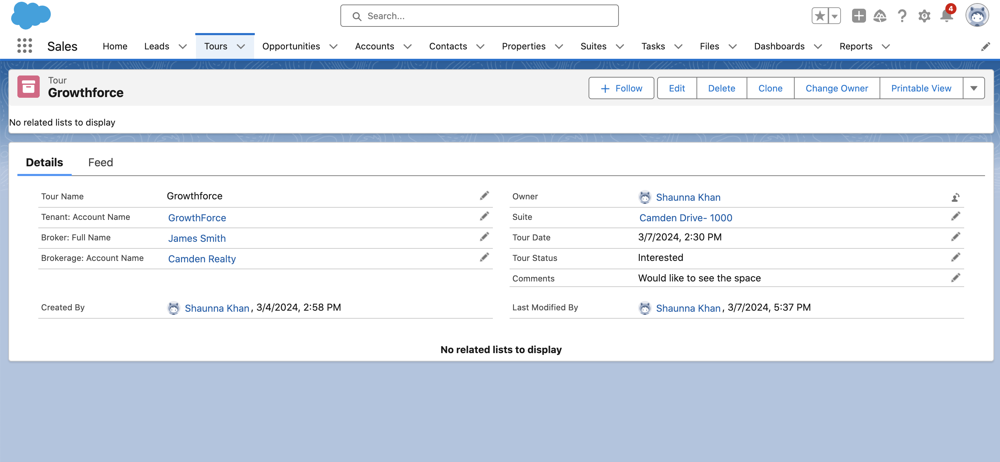
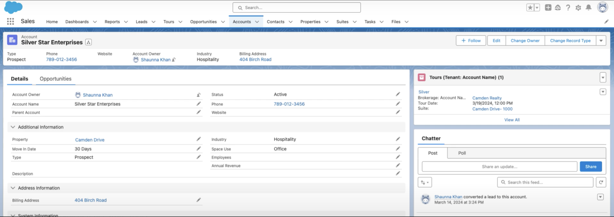

Learn why your real estate clients are or aren't converting after the tours.
Making feedback collection more specific and transparent through strategic field selection and visual hierarchy enables teams to examine trends, understand prospect actions, refine strategies, and ultimately raise conversion rates.
In residential leasing sales, converting prospects into signed agreements frequently depends on the tour experience and other variables including unit particulars and lifestyle compatibility.
The platform concentrates on monitoring key touchpoints, particularly tour experiences, enabling teams to comprehend what influences prospect choices. By gathering more detailed prospect information and feedback at the tour level, the tool assists agents and leadership in recognizing patterns behind successful and unsuccessful conversions.
Making feedback collection more specific and transparent through strategic field selection and visual hierarchy enables teams to examine trends, understand prospect actions, refine strategies, and ultimately raise conversion rates.
For the company: The demo increased sales opportunities by demonstrating the startup's Salesforce capabilities and real estate expertise to prospective clients.
For clients: Individual platforms would be customized per client requirements. The demo serves as a foundational template. I didn't stay long enough to collaborate with new clients, but would have conducted discovery sessions to determine their optimal features and information prioritization.
These intricate elements of conversion often disappear in conventional CRM procedures. Disorganized information makes it challenging for teams to recognize conversion drivers and enhance leasing approaches.
Forecasting whether a prospect will convert presents notorious complexity due to interconnected variables. Professionals indicate it transcends pricing or availability. Such variables can include timing, individual circumstances, market dynamics, and especially the tour encounter matter significantly.
Even an ideal unit on paper fails if the tour feels hurried or maintenance concerns arise. Minor details such as lobby atmosphere or agent attentiveness often determine outcomes.
Research began with secondary investigation through articles, social platforms, forums, and studies examining typical workflows and requirements for digital real estate prospect administration. I then consulted a subject matter specialist with over ten years of Salesforce experience in real estate organizations.
Real estate organizations frequently encounter:
"We've stopped calling them 'leads' ... You have to look at them like they're not a lead — they're a relationship. Let's call these people, people."
— Emily Smith, Wemert Group Realty
🎯 Their main goal: keep as many units occupied as possible!
⚠️ Possible biases and constraints to consider: this undertaking occurred within an organization with minimal design maturity and constrained resources. I lacked opportunities to interview numerous individuals beyond internal staff and one subject matter specialist. Fortunately, the specialist — a certified Salesforce Administrator — possessed UX comprehension and understood usability problems, though her experience was primarily in commercial rather than residential segments. Additionally, this represented my first B2B and real estate initiative, potentially missing details seasoned professionals would recognize.
Following conversations with the subject matter specialist regarding typical personas, journeys, and pain experiences, I researched potential competitors' typical user frustrations.
A summary of typical user and business needs discovered through secondary and primary research:
⚠️ This demo represents only one segment of a comprehensive real estate leasing instrument the startup would develop for clients. Not all typical real estate leasing management capabilities were constructed, as this sample demonstrates customization potential.
A critical requirement for real estate administration tools is an organized, unified property database. The upper white navigation customization reflects information organization consistent with mental frameworks from conventional real estate applications.
Property details fields align with information agents require to sustain full occupancy, concentrating on essential property particulars and lease/occupancy percentages.

A field specifically for "problem units" should have been incorporated, facilitating consistent identification of persistently difficult-to-lease units and pattern recognition. The original design relegated this to the Notes field, risking oversight of critical information.
🔔 Not pictured: notifications when occupancy decreases beneath a defined level.
A module within each property profile displaying all associated suites would have been preferable to positioning suites in a separate tab, better addressing documented pain points.
Salesforce's standard opportunity management display was customized to monitor lease expiration and critical specifics including rental rates per square footage.

🔔 Not pictured: notifications when leases expire or approach expiration.
Salesforce's standard prospect display was configured by incorporating fields for associated property/suite, tour particulars, and descriptive sections for capturing nuanced information conveying narrative dimensions numbers alone cannot provide.
As mentioned earlier, the tour frequently determines whether a prospect chooses to convert. A specialized Tours module was constructed capturing the who, what, when, where, and why of tour experiences. Recording such extensive details about this pivotal real estate sales moment supports organizations in comprehending prospect activity patterns.



I collaborated with Salesforce administrators determining which metrics prospective real estate customers should prioritize.
I departed shortly after creating this demo, though it subsequently increased real estate client sales.